Scene 1Warm-Up
▶ Start hereHow your Wonder Films lessons work1-minute videoOpen ▾
🎯 TodayI can…
- describe how plants respond to light, water, gravity, and heat.
- explain how a plant response helps the plant survive.
- use evidence from observations to explain why a plant grew the way it did.

🔎 Mystery specimenWhat did this plant do after it fell over?
What to do: Press Inspect specimen. Move the magnifying lens over the plant, then tap 3 things you notice.

📚 Word WallWords scientists use
What to do: Tap or click each card to flip it and read what the word means. Tap 🔊 to hear the word.
Scene 2The Lesson
🌱 Part 1Plants Can't Walk, But They Respond
A plant can't walk toward water or away from the dark. But it still responds to the world around it, by changing how it grows.
Something in the environment that a plant responds to is called a stimulus. The change in how it grows is a response. The plant isn't choosing. Its cells just grow faster on one side, so it bends.
🎞️ Put the scenes in orderWhat happens to a seed planted upside down?
What to do: Drag each photo into the film strip, from first to last. You can also tap a photo, then tap a frame. Get the order right and your strip becomes a movie.
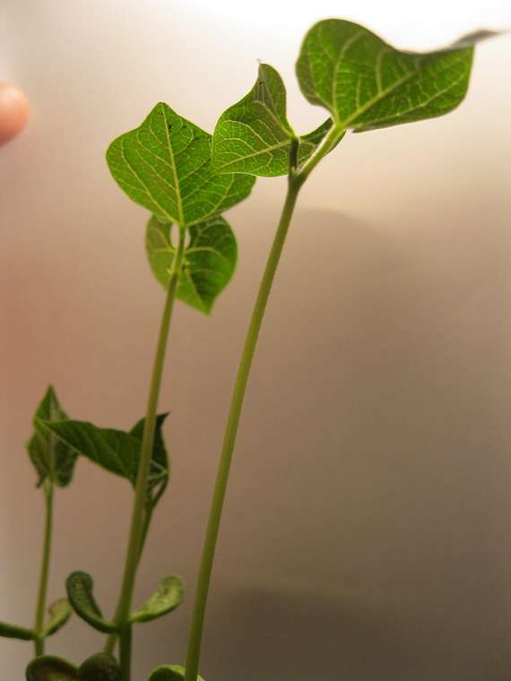
The seed was planted upside down. Why did its root still end up growing down?
🔦 Part 2Light and Water
Stems and leaves grow toward light. This is phototropism. A plant by a window slowly leans toward the glass, so its leaves catch more sunlight to make food.
Roots grow toward water in the soil. This is hydrotropism. It helps the plant get the water it needs to stay alive.
🧪 The Stem and Root LabWhich part grows toward light, and which grows toward water?
What to do: Follow the steps one at a time. You will pick, test, and then explain.
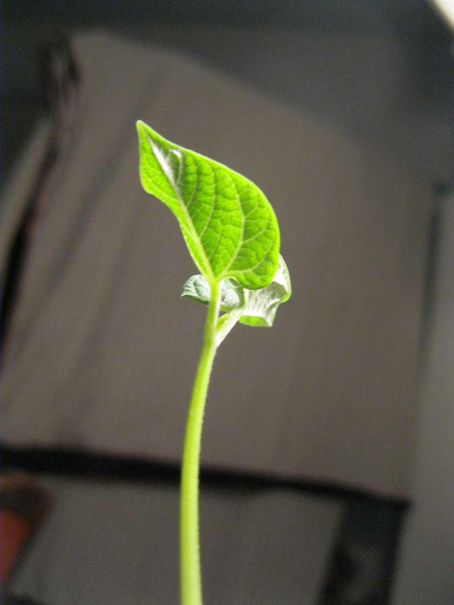

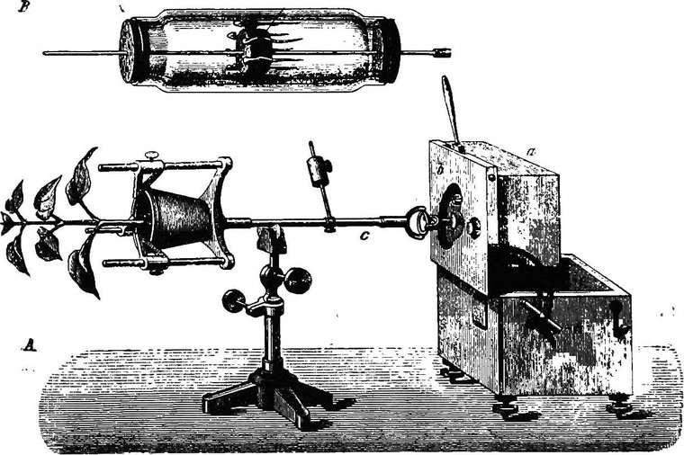
⬇️ Part 3Gravity and Heat
Roots grow down and stems grow up, no matter which way a seed is planted. This response to gravity is called gravitropism. It keeps roots in the soil and leaves in the light.
Plants respond to heat, too. When it turns cold, many trees drop their leaves to save water and energy. When spring warmth returns, buds open and growing starts again.
🌳 The banyan elevatorRide down Edison's banyan, from leaves to roots
What to do: First, make a prediction. Then brush the glowing layer: drag across it (or tap it again and again) until the plant shows.
Which way do you think the banyan's hanging roots grow?
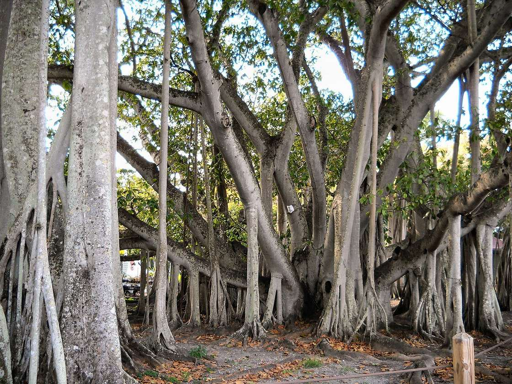
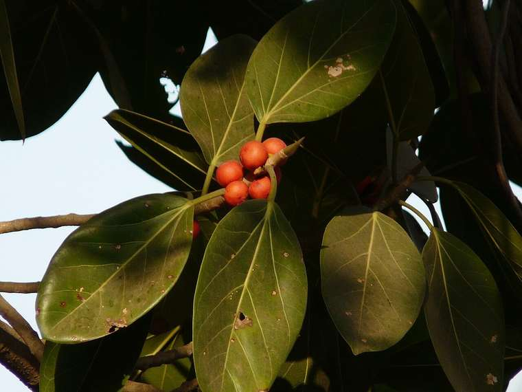
Level 1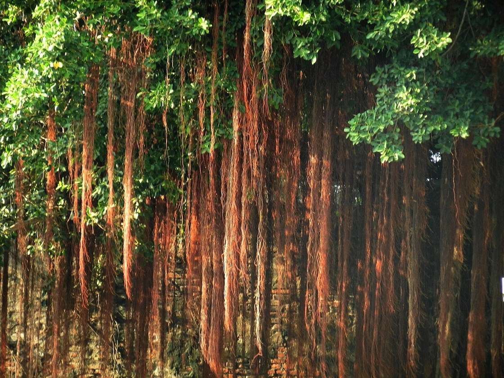
Level 2 Level 3
Level 3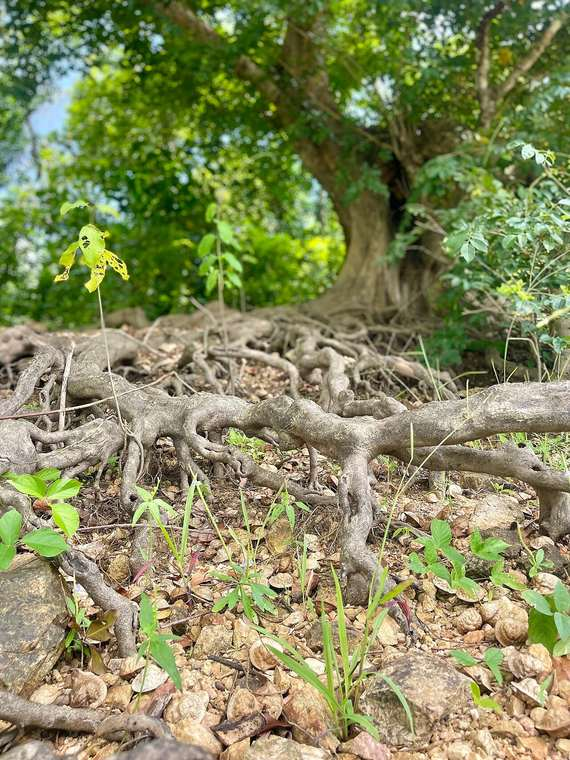
Level 4Every part of a plant responds to its environment. Leaves grow toward light, roots grow down with gravity, and roots grow toward water. These responses help the plant survive.
A banyan's hanging roots grow down, even up in the air. Why?
Sunflowers that follow the sun
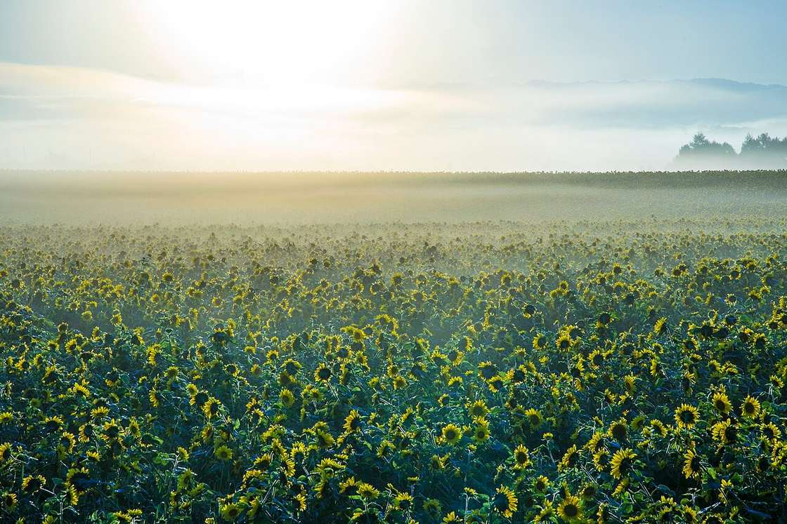
Young sunflowers face east at sunrise. All day long, their heads slowly turn west, following the sun across the sky.
At night, they swing back to face east again, ready for morning! When a sunflower grows up and blooms, it stops turning and faces east.
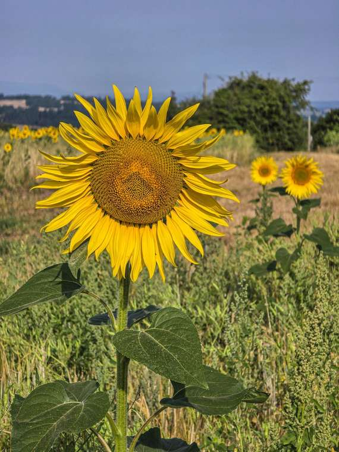
🗂️ Part 4What Was It Responding To?
What to do: Pick 3 cards, one at a time. Tap a clue you see, then pick what it is. Predict what it responded to, and watch its home appear.
| Plant | What I observe | The clue | Its stimulus | My evidence |
|---|
🌍 Rebuild the plant's homeUse your evidence to rebuild the plant's home OPTIONALOpen ▾
What to do: Pick one you solved. Pick the place it points to, then pick the living things that belong there.
Pick one from your chart and explain it.
Start with: "Plant __ has…"
Scene 3Self-Check
What is phototropism?
A seedling is planted sideways. After one week, the stem is pointing up and the roots are pointing down. What caused this?
Why do plant responses, like growing toward light, help a plant survive?
Scene 4Assignment
🔍 Part AMatch the response
What to do: Read each one. Pick the best answer, or type your answer.
1. A stem curves toward the window over three weeks. What is the stimulus, and what is the response called?
2. A seedling's roots grew straight down, even though the seed was planted on its side. What stimulus caused this?
3. Roots in a dry garden grew toward a leaky pipe buried in the soil. What were they responding to?
🚀 Part BShort answer
What to do: Answer in complete sentences. Use your science words.
1. Explain why it matters that stems grow toward light. What would happen to a plant if its stem grew away from light instead?
2. How is a plant's response to gravity different from its response to light? Compare the two in 2 or 3 sentences.
✍️ Write and explainWhat will the plant do?
What to do: A plant is growing in a corner with light coming from only one side. Explain what will happen to this plant over the next few weeks. Use at least one of the science words under the boxes.
Start with: "I think the plant will…"
Start with: "I know this because…"
Start with: "This makes sense because plants need…"
🎨 Part CDraw and label
What to do: Draw a plant in a pot near a sunny window, after it has responded. Label the stem, 2 leaves, the roots, and the light. Add an arrow that shows how the plant responded.
🎬 Your question from Scene 1Can you answer it now?
What do you still wonder about? Write your question here. Then answer it.
📋 My answersEverything you wrote, in one place
(Your answers show up here as you write.)
How to turn in: Copy your answers and paste them into the Canvas assignment. Or download the file and upload it. Then press Save my drawing in Part C and upload your drawing too.
✅ Checklist
What to do: Tap each item when it is done. Items you finish on the page check themselves.
- My evidence chart has 3 plants and my explanation.
- Part A: all three answers.
- Part B: questions 1 and 2.
- Part C: my drawing and both labels.
- Write and explain, with at least one science word.
🎬 Premiere my plant-response storyYour exhibit
What to do: Check your exhibit. Pick the one you wrote about, add your first name, then press Premiere film.
I observed…
I think it was…
My evidence…
It tells us…
🎞️ This film's frames
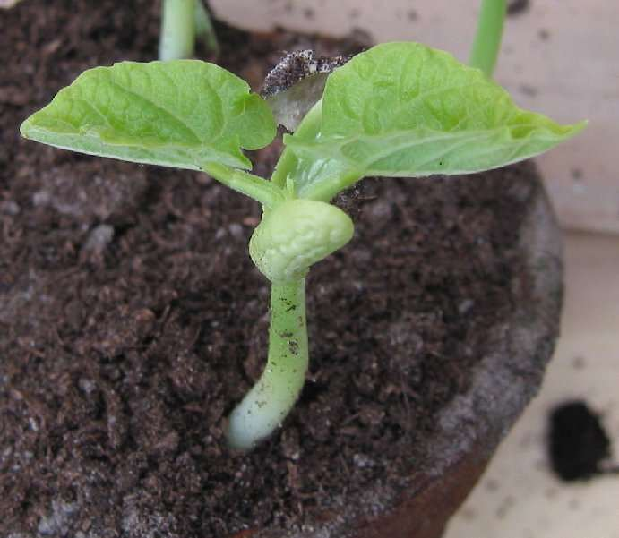
The upside-down seed
The Stem and Root Lab
The banyan elevator
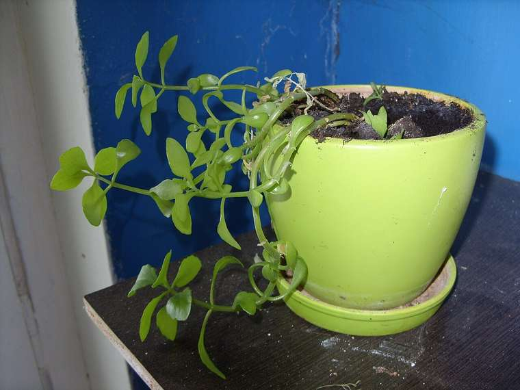
What was it responding to?
Earn all four frames in the Lesson, then finish the checklist.
🔜 Coming up next20.02 · Investigation: Phototropism Experiment
Next time, you'll run your own phototropism test and see a plant bend toward the light.
Photo and music credits
- Haricot 01, Jeangagnon, CC BY-SA 3.0
- Haricot 04, Jeangagnon, CC BY-SA 3.0
- Borgos (Assamese- বড়গছ) (3296875461), Dinesh Valke from Thane, India, CC BY-SA 2.0
- Tichnor Bros. FM-130 - Great Banyan Tree, Edison Winter Home, Fort Myers, Flo…, Tichnor Brothers, Public domain
- Aerial Roots of Banyan Tree 榕鬚 - panoramio, lienyuan lee, CC BY 3.0
- Edison Banyan tree, Fredlyfish4, CC BY-SA 4.0
- Banyan Tree, Fort Myers, J. Miers - User: (WT-shared) Jtesla16 at wts wikivoyage, CC BY-SA 3.0
- Deyrolle 422033 (cropped), Émile Deyrolle (1838-1917), Public domain
- Pfeffer's clinostat, "Plant physiology" (1918), Internet Archive Book Images, CC0
- Crocus flavus ssp flavus in snow, Meneerke bloem, CC BY-SA 3.0
- 20160308Crocus chrysanthus1, AnRo0002, CC0
- Villa Gesell Casa del Árbol 01, Roberto Fiadone, CC BY-SA 4.0
- Villa Gesell Casa del Árbol 02, Roberto Fiadone, CC BY-SA 4.0
- House plant after having light from only one side, VolodyA! V Anarhist, FAL
- Orhidee fototropism, Ang3likq, CC BY-SA 4.0
- Maple along the boardwalk at Manatee Springs State Park, The Bushranger, CC BY-SA 4.0
- Acer rubrum 85zz, Photo by David J. Stang, CC BY-SA 4.0
- Stream bank erosion slowed by tree roots, Trio3D, CC BY-SA 3.0
- Tree roots ground level gravel seedlings Owalla Dam, Jevuniverse, CC BY 4.0
- Bean germination, Doronenko, CC BY-SA 3.0
- Germinació Phaseolus4, Victor M. Vicente Selvas, Public domain
- Stamboon kiemplant, Rasbak at Dutch Wikipedia, CC BY-SA 3.0
- Gravitropism in Kalanchoe blossfeldiana, Trio3D, CC BY-SA 4.0
- Sunflower In The Misty Morning (124552173), Oka Photo, CC BY 3.0
- Morning sunflower - geograph.org.uk - 8370384, Jonathan Billinger, CC BY-SA 2.0
- Kürbis (Cucurbita maxima) Keimung im Rhizotron--Josef Schlaghecken, Schlaghecken Josef, CC BY-SA 4.0
- Adventitious roots growing from Willow branches in the St Mary River (4430876…, GlacierNPS, Public domain
- Music: Felix Mendelssohn, A Midsummer Night's Dream Overture, Op. 21, European Archive recording, public domain (Wikimedia Commons).
- Opti the owl: Optima Academy. Sound effects are made by the page. The upside-down seed movie and the banyan elevator are models; every plant photo is real.